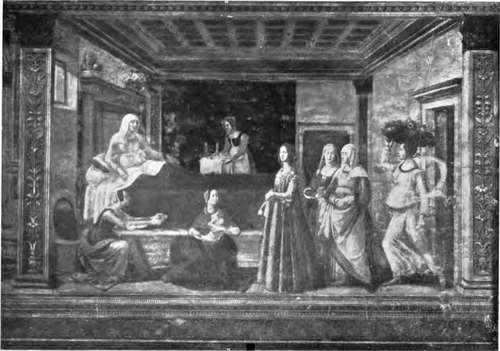

Tempera. Part 2
Description
This section is from the book "Mural Painting", by F. Hamilton Jackson. Also available from Amazon: Mural Painting: -1904.
Tempera. Part 2
Yolk. | White. | |
Water | . 51-5 . | .. 84-8 |
Albumen, vitellin, etc. . | . 150 . | .. 120 |
Fat or oil | . 30 0 . | .. 0-5 |
Mineral matter | . 14 . | .. 1-2 |
Other substances | . 2-1 . | .. 1-5 |
At the beginning of the fifteenth century tempera painting on cloth was common in the Netherlands; Van Mander says that at that time rooms were frequently hung with such works instead of tapestry. The mediums employed were egg and size. Eastlake asserts that the priority of records is in favour of an English invention of the vehicle, both for transparent and more solid tempera, that which was used in the Netherlands being different from that employed in Italy, and that according to Sandrart the ordinary tempera was found not to last, owing to the size being affected by the damp climate. For the same reason, no doubt, the transparent method described in Le Bfcgue's copy of the MS. of Alcherius was adopted both in England and in Germany, in the former country certainly during the fourteenth century. Eastlake gives it thus: "In England the painters work with these water colours on closely woven linen saturated with gum water. This, when dry, is stretched on the floor over coarse woollen and frieze cloths, and the artists, walking over the linen with clean feet, proceed to design and colour historical figures and other subjects. And because the linen is laid quite flat on the woollen cloths the water colours do not flow and spread, but remain where they are placed, the moisture sinking through into the woollen cloths beneath, which absorb it. In like manner the outlines of the brush remain defined, for the gum in the linen prevents the spreading of such lines. Yet after this linen is painted its thinness is no more obstructed than if it was not painted at all, as the colours have no body".
THE BIRTH OF THE VIRGIN.
Fresco by Domenico Ghirlandajo, in the Church of S. Maria Novella, Florence.
In England walls which were to have figure subjects painted on them appear often to have been prepared with cloth glued over the surface, an expedient also adopted sometimes in Italy; and Sandrart says, " as they feared the walls might crack, they glued linen over them, then laid a ground of gypsum and painted their pictures in tempera." Damp was of course a great enemy, and many were the expedients resorted'to to keep it at arm's length. Tinfoil was sometimes, used for this purpose. Vasari says " walls, when dry, should receive one or two coats of warm size, the work being then executed entirely with colours tempered with it." The followers of Giotto used to combine fresco and tempera in their work far more than merely in retouching. They used to sketch in the composition on the rough plaster to try the effect, and then the intonaco was laid over it, either in pieces or altogether, according as tempera or fresco was intended to preponderate in the completed work. (See the section on fresco secco).
Ornaments in relief, such as nimbi and diapers (to be afterwards gilded), were formed with " gesso sottile " (made with one gallon of water to one pound of plaster), to which was added enough Armenian bole to give it a little colour. Ornaments thick enough to cast were fastened to the walls with ship pitch. Small reliefs were also made with " vernice liquida " (sanda-rac varnish) and flour, and with two parts of wax and one of pitch used warm.
In tempera, when the binding matter, the gluten, is too plentiful, the colours dry on contact with the air and the painting cracks and scales off: from this arises the necessity of applying them in thincoats and letting them dry well before retouching. \The process was much used by the Egyptians. Whether wood or cloth were the ground the first coat of colour was always white, the white underpaying making the colours of the o ther coats more brilliant. Egypt produces mimosas which give gum, and gelatine glue was known there, but, according to M£rim£e, its painters preferred a tough gum like gum tragacanth. There are few signs of cracking in their paintings, and some think that they used honey to mix with the gum. The colours were applied with brushes made from the fibres of the reed, larger brushes were doubtless made of the arak (Salvadoro persica) say Cros and Henry. These brushes and palettes of wood, alabaster, or enamelled pottery are to be seen in museums. Sometimes they have as many as twelve hollows in them, but seven is a more usual number, the colours employed being white, yellow, green, blue, red, dark brown, and black. They used varnishes with which they "glazed/1 and these are sometimes still transparent and colourless, though others of a resinous basis have darkened. The Greeks and Romans also used gum and glue as a medium. Vitruvius writes of the preparation of lamp black. " One takes a part, which tempered with gum serves for writing ink, the rest mixed with glue may be used for painting walls." They used principally "sarco-colla," a resinous gum from a shrub of North Africa, transparent and soluble in water, "very useful for painters and doctors." Pliny says the best glue is made from the ears and genitals of bulls. "Glue of Rhodes is that which deceives the least, so doctors and painters use it." " Those who paint by putting a coat of sandyx (fire colour) and of purpurissimum (violet carmine) with egg (which shows that the egg medium was then known) obtain the brightness of minium. If they wish to make purple they put upon a coat of blue, purpurissimum with egg." This is evidently a process of glazing. They also used milk as a medium. The earth of Chios dissolved in milk was used, according to Pliny, for rewhitening walls. At Elis there was a temple of Athene in which Pansenus, brother of Pheidias, covered the plaster with milk and saffron, which, Pliny says, could be smelt when rubbed with a wet hand. Vitruvius says that by mixing vaccinium (our myrtle) in a certain manner with milk a fine purple was made.
The brushes used by the Greeks and Romans were made from the tail of the ox in the most ancient times, but Vitruvius mentions hog hairs. The sponge was also used and sometimes by way of a brush; Pliny says " there is a sort of close, fine sponge, from which brushes are made." All sorts of grounds were used. M. Chevreul analysed some coloured stucco from the temple of Jupiter at Agrigentum and from an ancient temple at Selinunt, and found considerable quantities of organic matter. In two Roman fragments found at the Palais de Justice, Paris, in 1848, he found none, and thought the colours had been used with a medium of lime milk. Some fragments from S. M&lard-des-Pr£s showed neither gum, resin, oil, gelatine, nor cheese. M. Chevreul thought these were done with a medium of hydrated lime mixed with the colours and sufficient water to make it fluid, which is. probably the true explanation. The plasters used by the ancients were: in Egypt, chalk mixed with serum and blood; in Etruria, lime; in Sicily, lime mixed with chlorites of sodium and calcium, silica and ferruginous aluminum. Professor Church says that for tempera (and fresco secco) the wall must be quite dry and completely carbonated, as otherwise the alkaline nature of the ground would limit the colours which could be used. Many Greek and Byzantine paintings were executed upon a caustic lime ground, natural earths being the principal colours used, which are not affected by alkalies. Slaked lime mixed with chopped straw, flax or cotton formed the basis of the plaster, all liable to decay and discolour the ground. The ordinary Italian and Spanish tempera ground consisted either of whitening and size, or of burnt gypsum, stirred well with water, so as to lose the power of setting, strained, and mixed with size. Great care was taken in the washing. The best size was made from parchment or the fiijer kinds of fish glue. The ground should always be absorbent; the use of too much size makes it crack. Whatever medium was employed the ground was always sized before commencing to paint.
PORTRAIT OF LUCREZIA TORNABUONI.
Detail from Ghirlandajo's fresco of the Birth of the Virgin, in S. Maria Novella, Florence.
To face page 78.
Continue to:
- prev: Tempera
- Table of Contents
- next: Tempera. Part 3